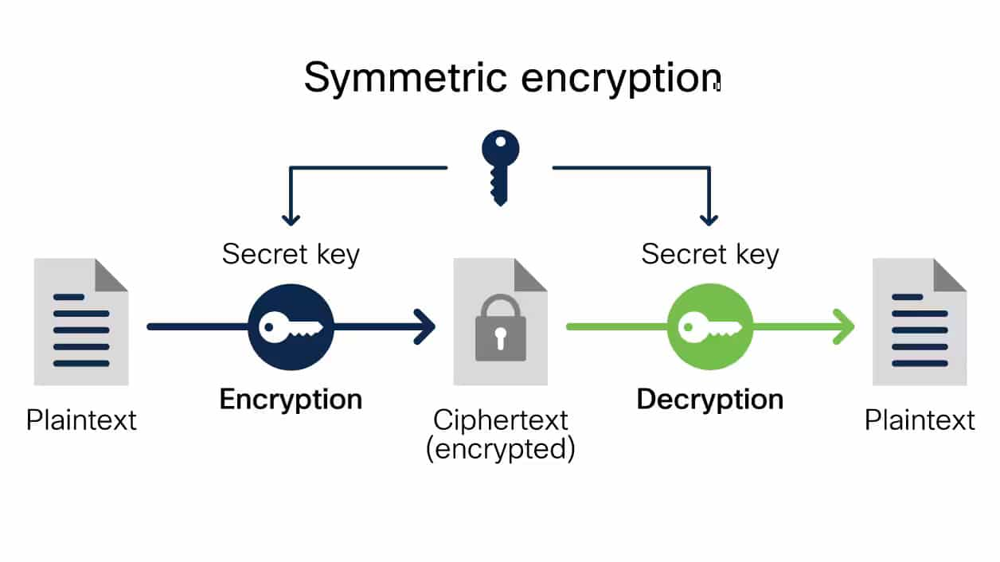

Tipos de encriptacion.
La encriptacion nos permite convertir la informacion en codigo indesifrable.
Existen dos tipos de encriptacion del cual nos permite establecer una transicion segura de la informacion.
Encriptacion simetrica.
La encriptación simétrica es más básica que la asimétrica, pero juega un papel importante en la comunicación cliente-servidor a través del protocolo HTTPS
Encriptacion asimetrica
La encriptación asimétrica utiliza una clave pública para cifrar texto sin formato y una clave privada para desencriptar el cifrado. Los datos cifrados con la clave pública solo pueden desencriptarse con la clave privada.

La importancia de hacer conocer temas de ciberseguridad permitirá a las demás personas establecer buenas prácticas de cuidado de la información como tal.